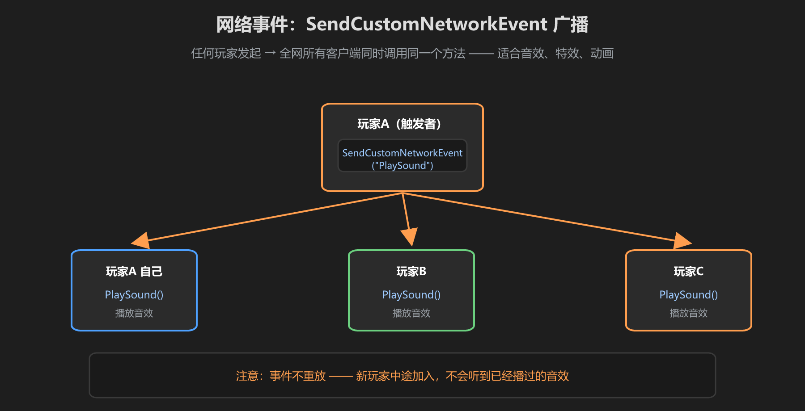
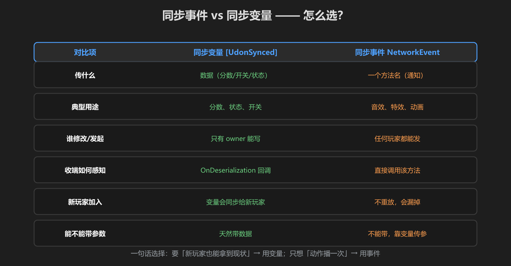

第 3 篇：同步事件 — SendCustomNetworkEvent 广播
同步变量传「数据」，同步事件传「通知」。当你想让所有玩家同时做一件事（播放音效、开特效、播放动画），就用网络事件广播。
1. SendCustomNetworkEvent
调用方法，全网所有客户端会同时调用你指定的那个方法：
SendCustomNetworkEvent(NetworkEventTarget.All, "PlayScoreSound");第一个参数是广播范围（All 所有人 / Others 除自己外），第二个参数是要调用的方法名。任何玩家都能发起广播，不需要 owner 权限。

图：触发者发起 → 全网所有客户端同时调用同一个方法
2. 只能调用 UdonBehaviour 自己的方法
能被网络事件调用的方法，必须满足：
- 写在同一个 UdonBehaviour 脚本里的方法（不能直接调用别的组件的方法）
- 是
public且无参（网络事件不能带参数）
想给别的东西发通知？常用的做法是「事件先到本组件 → 本组件再用普通方式驱动其他物体」，或者让目标物体自己挂着接收脚本。
无参怎么办？事件不带参数，要传数据就用同步变量：先改变量（数据同步），再发事件（通知大家去读/去播）。这是标准组合拳。
3. 示例：给所有玩家播放音效
using UdonSharp;
using UnityEngine;
using VRC.SDKBase;
public class ScoreComponent : UdonSharpBehaviour
{
[SerializeField] private AudioSource sound;
public void AddScore()
{
if (!Networking.LocalPlayer.IsOwner(gameObject)) return;
score += 1; // 变量：同步数据
SendCustomNetworkEvent(NetworkEventTarget.All, "PlayScoreSound"); // 事件：广播动作
}
public void PlayScoreSound() // 全网都会被调用
{
sound.Play(); // 每个客户端自己播一次音效
}
}注意 PlayScoreSound() 在每个客户端上都会执行，所以音效是在每个人自己的耳机里播放 —— 效果就是所有人都听到加分声。
4. 新玩家加入不会重放
网络事件是一次性的广播：播完就没了，后进来的玩家不会重播已经播过的音效。所以：
- 「动作」用事件：音效、特效 —— 错过就错过，无所谓
- 「现状」用变量：分数、开关 —— 新玩家进来时同步变量会补给他

图：事件与变量的完整对比 —— 按场景选对工具
选择口诀：要「新玩家也能拿到现状」→ 用变量；只想「动作播一次」→ 用事件。拿不准时，先用变量，准没错。
学前检查清单
- 会写 SendCustomNetworkEvent 调用
- 知道网络事件只能调用同脚本内的无参 public 方法
- 能用事件给所有玩家播音效
- 理解「新玩家加入不会重放事件」的含义